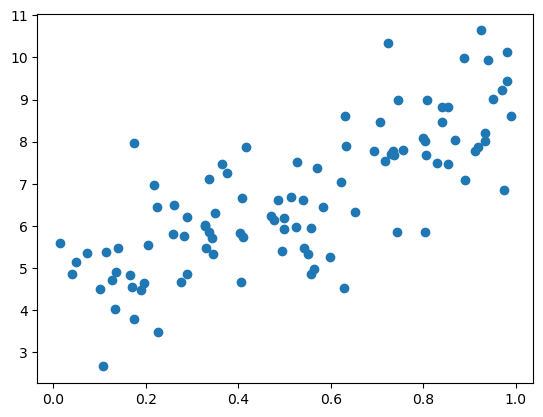
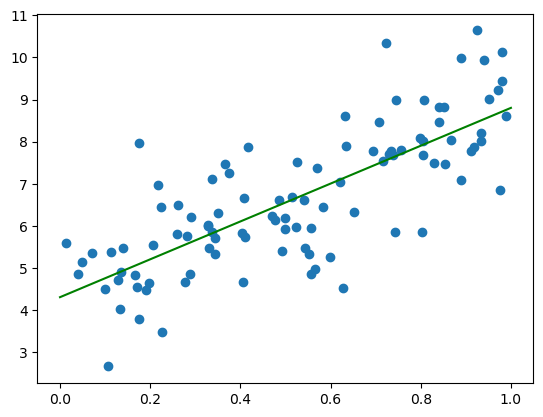
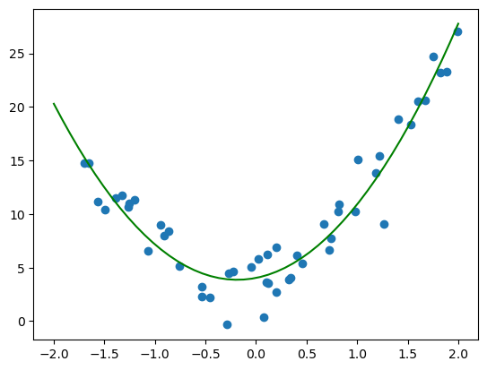
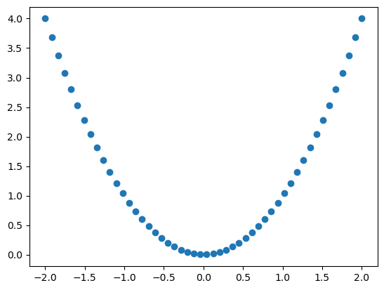
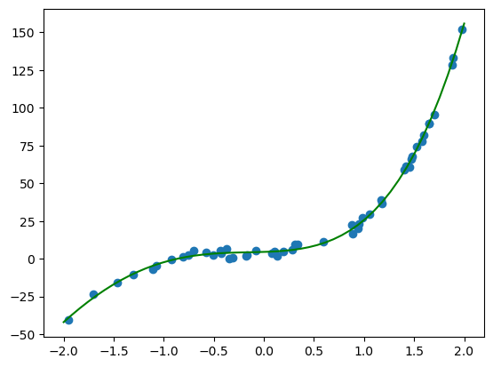

import numpy as np
import matplotlib.pyplot as plt
from sklearn.linear_model import LinearRegression
from sklearn.preprocessing import PolynomialFeaturesPolynomial Regression
Polynomial Regression
X = np.random.rand(100,1)
y = 4 + 5 * X + 1 * np.random.randn(100, 1)plt.scatter(X, y)
plt.show()
reg = LinearRegression()
reg.fit(X, y)LinearRegression()In a Jupyter environment, please rerun this cell to show the HTML representation or trust the notebook.
On GitHub, the HTML representation is unable to render, please try loading this page with nbviewer.org.
LinearRegression()
X_vals = np.linspace(0, 1, 100).reshape(-1,1)
y_vals = reg.predict(X_vals)
plt.scatter(X, y)
plt.plot(X_vals, y_vals, color ='g')
plt.show()
Second Order
X = 4 * np.random.rand(50,1) -2
y = 4 + 2 * X + 5 * X ** 2 + 2 * np.random.randn(50, 1)poly_features = PolynomialFeatures(degree = 2, include_bias = False)
X_poly = poly_features.fit_transform(X)reg1 = LinearRegression()
reg1.fit(X_poly, y)LinearRegression()In a Jupyter environment, please rerun this cell to show the HTML representation or trust the notebook.
On GitHub, the HTML representation is unable to render, please try loading this page with nbviewer.org.
LinearRegression()
X_vals = np.linspace(-2, 2, 50).reshape(-1,1)
X_vals_poly = poly_features.transform(X_vals)
y_vals = reg1.predict(X_vals_poly)
plt.scatter(X, y)
plt.plot(X_vals, y_vals, color ='g')
plt.show()
X_vals_poly[:,1]array([4.00000000e+00, 3.68013328e+00, 3.37359434e+00, 3.08038317e+00,
2.80049979e+00, 2.53394419e+00, 2.28071637e+00, 2.04081633e+00,
1.81424406e+00, 1.60099958e+00, 1.40108288e+00, 1.21449396e+00,
1.04123282e+00, 8.81299459e-01, 7.34693878e-01, 6.01416077e-01,
4.81466056e-01, 3.74843815e-01, 2.81549354e-01, 2.01582674e-01,
1.34943773e-01, 8.16326531e-02, 4.16493128e-02, 1.49937526e-02,
1.66597251e-03, 1.66597251e-03, 1.49937526e-02, 4.16493128e-02,
8.16326531e-02, 1.34943773e-01, 2.01582674e-01, 2.81549354e-01,
3.74843815e-01, 4.81466056e-01, 6.01416077e-01, 7.34693878e-01,
8.81299459e-01, 1.04123282e+00, 1.21449396e+00, 1.40108288e+00,
1.60099958e+00, 1.81424406e+00, 2.04081633e+00, 2.28071637e+00,
2.53394419e+00, 2.80049979e+00, 3.08038317e+00, 3.37359434e+00,
3.68013328e+00, 4.00000000e+00])plt.scatter(X_vals, X_vals_poly[:,1])
Higher Order
X = 4 * np.random.rand(50,1) -2
y = 4 + 2 * X + 5 * X ** 2 + 12 * X ** 3 + 2 * X ** 4 + + 2 * np.random.randn(50, 1)
poly_features = PolynomialFeatures(degree = 4, include_bias = False)
X_poly = poly_features.fit_transform(X)
reg2 = LinearRegression()
reg2.fit(X_poly, y)
X_vals = np.linspace(-2, 2, 50).reshape(-1,1)
X_vals_poly = poly_features.transform(X_vals)
y_vals = reg2.predict(X_vals_poly)
plt.scatter(X, y)
plt.plot(X_vals, y_vals, color ='g')
plt.show()